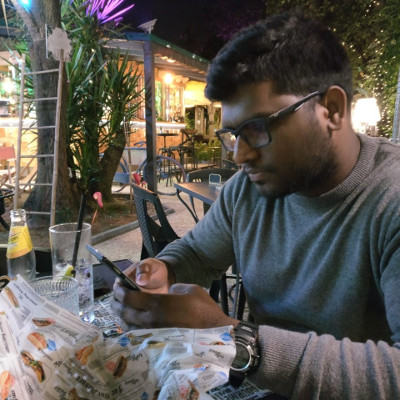

Data Scientist
Dow Jones
Designed and deployed reasoning-driven AI agents for automated financial analysis, integrating multi-agent orchestration, data intelligence, and enterprise-grade LLM systems.

Researcher | Data Scientist
I am an AI researcher and engineer specialising in Large Language Models (LLMs), multi-agent systems, applied reasoning and neural architectures. My work sits at the intersection of machine learning, data engineering, and natural language processing, building systems that transform raw data into adaptive, intelligent applications.
I am currently a Data Scientist at Dow Jones in Barcelona, Spain, building reasoning-driven AI agents for automated financial analysis.
PhD in Computer Science
Technological University Dublin, Ireland · Thesis
BE in Electronics and Telecommunications, 2010
Goa Engineering College, Goa, India
Dow Jones
Designed and deployed reasoning-driven AI agents for automated financial analysis, integrating multi-agent orchestration, data intelligence, and enterprise-grade LLM systems.
RavenPack
Developed a real-time financial news analytics system that detects and tracks emerging market trends using transformer-based embeddings and advanced topic modelling.
Breakthrough
Pioneered the integration of large language models (LLMs) into robotic systems to advance autonomy, adaptability, and intelligent control.
Technological University Dublin
Conducted research on large language model (LLM) pre-training, focusing on how different neural architectures capture long-distance dependencies (LDDs).
Technological University Dublin
Delivered laboratory sessions and tutorials in the School of Computer Science and School of Engineering while pursuing a PhD, guiding undergraduate and postgraduate students.
ADAPT Centre
Sensor Data Intelligence & Event Detection Research: sensor-driven time-series modelling and event detection.
To conduct research in the field of Deep Learning (Natural Language Processing).
To attend the ACL 2019 workshop on Deep Learning and Formal Languages: Building Bridges.